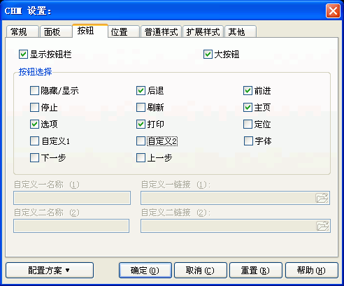

您可以通过在编译设置对话框里按"CHM设置..."按钮, 然后在"CHM设置"对话框里选取"按钮"跳格看到这个对话框。关于这个对话框的使用请看下面的具体描述.

显示按钮栏:
决定CHM文件是否包括按钮栏 （或者说工具栏）.
在某些特殊情况下或许您会需要这个选项，比如您希望最大化CHM的可视区域的时候.
如果不选此项,则下面的所有选项都将被忽略.
大按钮:
决定CHM是否使用大按钮.
按钮选择 / 隐藏显示:
决定CHM文件是否显示"隐藏显示"按钮.
"隐藏显示"按钮负责切换CHM的目录索引的显示与否,
如果您制作的CHM包括目录,索引,搜索等功能时,建议选中这个选项
- 因为用户可以通过切换是否显示目录来获得更大的可视空间,
这样阅读时会更方便.
按钮选择 / 后退:
决定CHM文件是否显示"后退"按钮.
后退按钮的作用与IE浏览器的"后退"按钮功能一样
- 它是针对浏览的历史记录的,也就是说您没开始浏览的时候,按钮会处于无效状态.
按钮选择 / 前进:
决定CHM文件是否显示"前进"按钮.
前进按钮的作用与IE浏览器的"前进"按钮功能一样
- 它是针对浏览的历史记录的,也就是说您没开始浏览的时候,按钮会处于无效状态.
按钮选择 / 停止:
决定CHM文件是否显示"停止"按钮.
停止按钮的作用与IE浏览器的"停止"按钮功能一样.
按钮选择 / 刷新:
决定CHM文件是否显示"刷新"按钮.
刷新按钮的作用与IE浏览器的"刷新"按钮功能一样.
按钮选择 / 主页:
决定CHM文件是否显示"主页"按钮.
在CHM里按下这个按钮后,CHM会显示您在"Easy CHM 工程设置 - 常规对话框"定义的CHM的主页.
按钮选择 / 选项:
决定CHM文件是否显示"选项"按钮.
按钮选择 / 打印:
决定CHM文件是否显示"打印"按钮.
按钮选择 / 定位:
决定CHM文件是否显示"定位"按钮.
按钮选择 / 自定义1:
决定CHM文件是否显示"自定义1"按钮.
如果您希望显示"自定义1"按钮,则下面的自定义一名称（1）和自定义一链接（1）您必须进行设置,否则无效.
按钮选择 / 自定义2:
决定CHM文件是否显示"自定义2"按钮.
如果您希望显示"自定义1"按钮,则下面的自定义二名称（2）和自定义二链接（2）您必须进行设置,否则无效.
按钮选择 / 字体:
决定CHM文件是否显示"字体"按钮.
"字体"按钮允许用户调节字体大小 -
如果您的网页源文件全部使用CSS固定了字体大小,则这个按钮就没有什么意义了.
按钮选择 / 下一步:
决定CHM文件是否显示"下一步"按钮.
与"前进"按钮不同的是,"下一步"按钮不是基于浏览的历史记录的
- 它是基于CHM的目录的,"下一步"按钮自动按照CHM的目录逐项浏览.
注意:
只有在"CHM设置 - 常规对话框"的"创建二进制TOC"和"创建二进制INDEX"被选中的情况下,这里的设置才会有效,更多信息请参看"CHM设置 - 常规对话框"的"创建二进制TOC".
按钮选择 / 上一步:
决定CHM文件是否显示"上一步"按钮.
与"后退"按钮不同的是,"上一步"按钮不是基于浏览的历史记录的
- 它是基于CHM的目录的,"上一步"按钮自动按照CHM的目录逐项浏览.
注意:
只有在"CHM设置 - 常规对话框"的"创建二进制TOC"和"创建二进制INDEX"被选中的情况下,这里的设置才会有效,更多信息请参看"CHM设置 - 常规对话框"的"创建二进制TOC".
自定义一名称（1）:
决定"自定义1"按钮的显示名称.
如果您的CHM用户可能不使用简体中文,请在这里使用英文名称.
自定义一链接（1）:
决定"自定义1"按钮被按下后您希望显示的页面地址.
自定义二名称（2）:
决定"自定义2"按钮的显示名称.
如果您的CHM用户可能不使用简体中文,请在这里使用英文名称.
自定义二链接（2）:
决定"自定义2"按钮被按下后您希望显示的页面地址.
| 版权所有 © 2000-2007 国华软件 保留全部权利. |